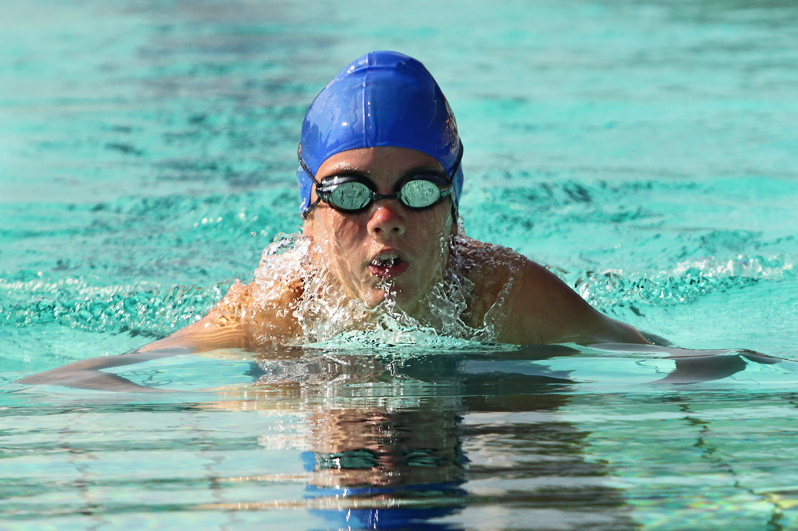

La natación es la práctica recreativa o deportiva del movimiento y desplazamiento sobre el agua, empleando sólo los brazos y las piernas del cuerpo humano. Es una técnica, también, que se aprende como método de supervivencia (de hecho, se imparte en numerosos currículos educativos), y que se practica como ejercicio dados sus múltiples beneficios al cuerpo.
Su práctica puede ser competitiva o meramente recreativa. Como deporte formal es uno de los más practicados del mundo, incluido en las disciplinas olímpicas y llevado a cabo en piscinas de distinta longitud (50, 100, 200, 400, 800 y 1500 metros). Las técnicas de nado específicas se conocen como estilos y poseen nombres particulares.
El ejercicio de la natación es posible dado que el cuerpo humano es ligeramente menos denso que el agua, por lo que tiende siempre a flotar. Nuestra relación con el agua es muy particular, a pesar de ser seres terrestres, ya que al nacer nos extraen de un entorno totalmente sumergido como es el útero materno.
De hecho, los bebés muestran una tendencia innata a la natación y ciertos reflejos de buceo, como la contención automática de la respiración, disminución de la frecuencia cardíaca y reducción de la circulación a las extremidades (es el reflejo de inmersión mamífero).
La natación es mucho más que una práctica deportiva, también es una destreza y una técnica que en muchas ocasiones puede representar la diferencia entre la vida y la muerte. Un buen nadador tiene más probabilidades de sobrevivir a ciertos accidentes marítimos, o a caídas por la borda de embarcaciones (si se encuentra consciente y en plenas facultades).
Por otro lado, la natación es una de las prácticas deportivas más populares del mundo. Aporta gran cantidad de beneficios al aparato respiratorio y circulatorio del ser humano, como veremos más adelante.